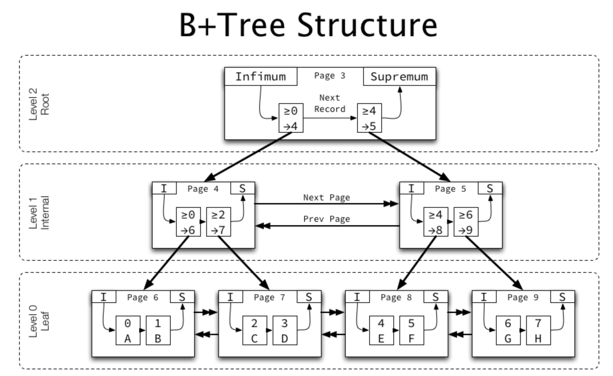
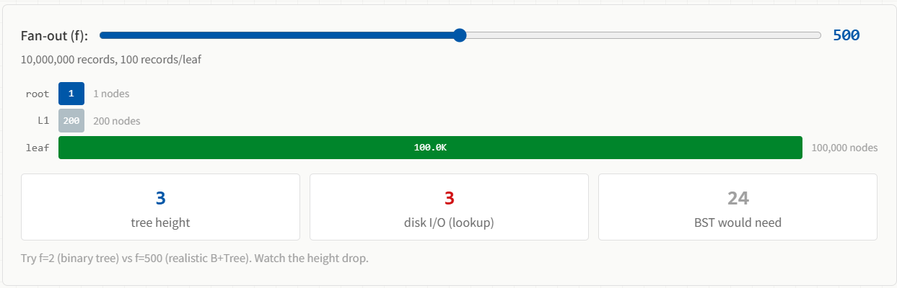
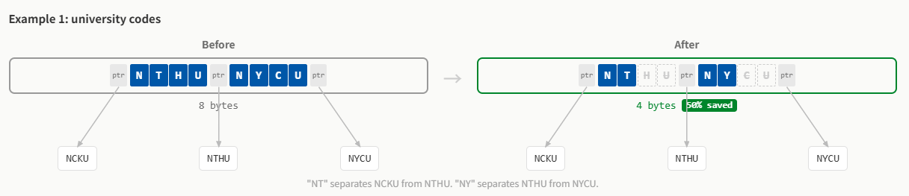

B+Tree

B+Tree
Reference:
Classification
Key Word Definition/ Discussion
B+Tree
樹高與效能：
B+Tree 的設計目標是「矮而胖」，透過極高的 Fan-out 讓樹高維持在 3~4 層，即使索引上千萬筆資料，也僅需極少的磁碟 I/O。
B+Tree vs. B-Tree：
- B-Tree：Inner Node 也存資料，導致每個節點能存的 Key 變少，樹變高。
- B+Tree：資料全在 Leaf Node，Inner Node 空間全給了 Pointer，因此分叉更多、樹更矮。
穩定地址：
Leaf Node 存的 pointer 通常指向資料表（如 Slotted Page）中的實體地址（CTID/TID）。


fan-out
計算方式：
假設 Page 為 8 KB，Key 8 bytes，Pointer 6 bytes。
呈幾何增長：
若 Fan-out 為 500，三層樹（Root + 1 層 Inner + Leaf）可索引 筆資料。


Inner node
- 導航功能：它像地圖，告訴搜尋演算法「大於 A 且小於 B 的值請往 Page X 找」。
- 高度快取：由於 Inner Node 數量相對極少且存取頻繁，資料庫通常會將其常駐在記憶體（Buffer Pool）中。
Leaf node
- 資料有序性：Leaf Node 內的資料是按 Key 排序的。
- 節點關聯：每個 Leaf Node 通常存有指向「前一個」與「後一個」節點的指標（Doubly Linked List），這是支援 Range Query 的關鍵。
Linked list
- 水平遍歷：傳統 BST 需要回溯 Parent 才能找到下一個有序元素，B+Tree 只要沿著 Leaf 的指標往右走即可。
- 與磁碟匹配：雖然相鄰 Node 在磁碟上不一定連續，但邏輯上的 Linked List 讓 Scan 變得直觀。
Range query
二步驟執行：
1. Seek：用 B+Tree 找到起始點（）所在的 Leaf Node。
2. Scan：沿著 Linked List 往後讀取，直到遇見結束點（）。
效能優勢：相較於 BST 需要多次 搜尋，B+Tree 僅需 1 次搜尋 + 順序讀取。
Split
- 由下而上：B+Tree 是從 Leaf 往 Root 方向「生長」的。
- 中間值上提：分裂時，中間的 Key 會被推送到 Parent Node 作為新的分界點。
Merge
- 反向操作：與 Split 相反，它會減少上層的 Routing Key。
- Lazy Merge：許多實務系統（如 InnoDB）不急著執行 Merge，因為合併成本高且未來可能有新資料填補，僅在極低填充率時才處理。
Prefix truncation
Prefix Truncation
Inner node 裡的 routing key，其實不需要存完整的 key。它的功能只是「告訴你往左走還是往右走」，所以只要存到能區分左右 child 的最短前綴就夠了。這叫 prefix truncation。
假設一個 inner node 有三個 child（三個 leaf node），分別存 "NCKU"（成大）、"NTHU"（清大）、"NYCU"（交大）的資料。這個 inner node 需要兩個 routing key 來分隔三個 child：




大學縮寫只有 4 個字元，效果就已經看得到。如果 key 是 email 地址，效果更驚人："A@gmail.com"、"B@gmail.com"、"C@gmail.com" 三個 key，routing key 不需要存完整的 "B@gmail.com" 和 "C@gmail.com"（共 22 bytes），只需要 "B" 和 "C" 各 1 byte 就夠了，省了 91%。key 越長，prefix truncation 省下的空間越多，一個 page 能塞進更多 routing key，fan-out 更高，樹更矮。
範例：若左子樹最大值為 apple，右子樹最小值為 apply，Routing Key 只要存 appl（或能區分兩者的最小字串）即可。
效益：顯著節省 Inner Node 空間 → 增加 Fan-out → 降低樹高。
Disk I/O
- Page-Aligned：B+Tree 節點大小通常等於磁碟 Page 大小（如 8 KB），確保一次 I/O 就能讀入一個完整的節點。
- I/O 效率對比：
- BST：查一筆資料約 24 次隨機 I/O（假設一千萬筆）。
- B+Tree：僅需約 3 次隨機 I/O。
Test
Key Concepts
理解 B+Tree 的基本結構：inner node 只存放 routing key，所有實際資料都儲存在 leaf node 中
理解 leaf node 之間以 linked list 串接，使得 range query 可以循序掃描而不需回到上層 node
計算 fan-out 並理解高 fan-out 如何讓 B+Tree 的高度極低，減少每次查詢所需的 disk I/O 次數
理解 B+Tree leaf node 透過 CTID 指向 slotted page 中的 record，以及 slot indirection 為什麼讓這個設計能運作
理解 prefix truncation 如何透過縮短 routing key 來提高 fan-out
Test your understanding
為什麼 B+Tree 要把所有資料都放在 leaf node，而不是像 B-Tree 那樣讓 inner node 也存資料？這個設計決策對 fan-out 和 range query 分別有什麼影響？
假設一棵 B+Tree 的 inner node 大小是 16 KB，每個 routing key 佔 8 bytes，每個 child pointer 佔 6 bytes。請計算 fan-out，以及這棵樹在 4 層的情況下最多能索引多少筆 record（假設每個 leaf node 存 200 筆）。
假設有一張 table 的 primary key 是 VARCHAR(100) 的 email 地址，平均長度 25 bytes。如果沒有 prefix truncation，一個 8 KB inner node 的 fan-out 大約是多少？如果 prefix truncation 能把平均 routing key 長度壓到 5 bytes，fan-out 又會變多少？這對樹高有什麼影響？
Quiz Pool
- 你正在設計一個以 B+Tree 作為索引結構的資料庫系統。雖然理想上希望樹的高度越低越好， 但實務上每個 node 的大小通常不會超過一個 page（例如 4 KB 或 8 KB）。
在以下四種解釋中，請判斷哪一個最合理說明為何 B+Tree 的 node 大小通常會限制在單一 page 內。
- 若一個 node 剛好對齊並完整放入單一 page，則每次存取 node 只需一次 page I/O，避免跨 page 存取帶來額外的 I/O 成本與複雜性。
- node 大小限制在單一 page 是因為作業系統不允許一次 I/O 讀取超過一個 page 的資料。
- 將 node 限制在單一 page 可確保每個 node 的 fan-out 固定，避免樹高隨資料量增加而不穩定。
- node 應該盡量大（例如 1 MB），因為子節點數量越多樹越矮，disk I/O 次數越少，整體查詢一定更快。
Answer
- 一個電商平台的訂單資料庫有 1000 萬筆資料，在
order_id（依訂單時間遞增的整數）上建了一棵 B+Tree（fan-out 500，樹高 3 層，上層 inner node 常駐 cache。以下四種查詢操作同時存在於這個系統中，選出它們在此 B+Tree 架構下能發揮的效益最高與最低的選項。
- P 最高、S 最低
- Q 最高、P 最低
- Q 最高、R 最低
- R 最高、S 最低
Answer
- 在資料庫系統中， B+ tree 被廣泛用於實作索引。假設我們有一個 Fan-out 為 f、高度為 h 的 B+ tree ，關於其處理查詢時的操作邏輯與效能特點，下列哪一個敘述最準確？
- 如果希望優化對連續範圍資料的查詢效率，可以在 B+ tree 的各個層級（包括 internal node 與 leaf node ）都建立了水平的 doubly linked list。
- 在執行 point query 時，若 internal node 已包含目標 key ，搜尋可立即在該層停止並回傳資料。
- 透過減少每個節點能容納的 key 的數量（即降低 f ），可以有效降低樹的高度 h ，從而減少磁碟 I/O 次數。
- 所有的資料記錄僅儲存在 leaf nodes ，這使得每次查詢的路徑長度固定為 h ，提供穩定的 I/O 表現。
Answer
- 已知一個資料庫共有 10 億筆資料，其系統底層採用 B+ Tree ，規格如下所示：
若改用 prefix truncation 後，平均 routing key 長度從 40 bytes 壓縮到 5 bytes，fan-out 和樹高會如何變化？
- Fan-out 從 178 變成 744，樹高則從 5 層降至 4 層。
- Fan-out 從 178 變成 744，但樹高不會改變。
- Fan-out 從 204 變成 744，樹高則從 5 層降至 4 層。
- Prefix truncation 只對查詢一段連續範圍的資料 (range query) 有幫助，對 fan-out 沒有影響。
Answer
- 在分析 B+Tree 的搜尋效能時，我們通常會將焦點放在節點存取的 disk I/O 次數（亦即樹的高度），
而大多會忽略在 inner node 中對數百個 routing key 執行 binary search 所帶來的 CPU 運算成本。
導致這個現象最主要的架構與硬體原因是什麼？- 內部節點中的 routing key 會透過資料庫引擎內建的 hash table 進行 O(1) 的直接定址，實際上引擎在 inner node 根本不需要執行 binary search。
- prefix truncation 技術將 key 壓縮得極小，使得單一 inner node 的資料量可以直接載入 CPU 的 L1 快取，將 binary search 的 time complexity 降為零。
- CPU 在記憶體內執行運算的速度遠快於存取 disk 的延遲，兩者的時間成本差距高達數個數量級，因此減少 disk I/O 次數的效益遠大於節省記憶體內的搜尋計算。
- 資料庫引擎在遍歷 B+Tree 時，會以 asynchronous 的背景執行緒處理 inner node 的 binary search，藉此將 CPU 的延遲完全隱藏在前景的網路傳輸中。
Answer
- 某資料庫使用 B+Tree 作為 secondary index。leaf node 的 entry 儲存
(key, CTID)，
其中 CTID 指向 heap file 中某個 slotted page 的 tuple 位置。系統在同一個 page 內做 compaction，將 record 的實體 byte 位置重新排列，
但沒有改變 slot array 的順序。完成後，查詢結果仍正確，且不需要回寫整棵 B+Tree。下列哪個解釋最正確？
- 因為 CTID 直接記錄 record 的 byte offset，compaction 後 offset 會自動被 CPU cache 修正，所以索引不需更新。
- 因為 B+Tree leaf node 彼此有 linked list，compaction 後只要沿 linked list 重新掃描一次，就能修正所有 CTID。
- 因為 prefix truncation 會在 inner node 壓縮 routing key，所以 page 內 tuple 搬移不會影響 leaf entry。
- 因為 CTID 可視為
(page_id, slot_id)的穩定位址，compaction 時只需更新 slot array 中 slot 對應的 byte offset；只要 slot identity 不變，leaf 裡的 CTID 仍有效。
Answer
- BST、B-Tree、B+Tree 三種樹狀結構都可以作為 external data structure。
請問 B+Tree 在處理 range query（如 WHERE order_id BETWEEN 100 AND 500）時，相較於 BST 與 B-Tree 能展現更高效率的主要原因為何？- B+Tree 的葉節點儲存的是資料在 page 內的直接 byte offset，這使得資料在 page 內部搬移後不需更新索引，提升了更新效能。
- B+Tree 的內部節點（inner node）不存放實際資料，僅存放 routing key，這能極大化 fan-out 並降低樹高，且葉節點間的 doubly linked list 支援高效的連續掃描。
- B+Tree 採用了與 B-Tree 相同的設計，讓內部節點也能儲存部分實際資料，以此減少查詢特定資料時必須走到葉節點的延遲。
- B+Tree 引入了 Prefix Truncation 技術，雖然會導致內部節點能塞入的路由鍵數量減少，但能確保查詢路徑始終保持在 1 次真正的 disk I/O。
Answer
- 假設你正在為一家擁有 10 億（）名用戶的社交平台設計資料庫索引。所有資料都儲存在硬碟中，且磁碟每讀取一個 Page 需要 10 ms。
請問在這種極端情境下，應該選擇 B+ Tree 還是 BST？以及較快者跟較慢者的時間差異大約是多少？註 : 每個 inner node 的 fan-out 是 。
- BST 的搜尋次數為 30 次 I/O，而 B+ Tree 的搜尋次數為 5 次 I/O，因此 B+ Tree 較快，時間差異約為 250 ms。
- BST 的搜尋次數為 30 次 I/O，而 B+ Tree 的搜尋次數為 4 次 I/O，因此 B+ Tree 較快，時間差異約為 260 ms。
- BST 的搜尋次數為 24 次 I/O，而 B+ Tree 的搜尋次數為 5 次 I/O，因此 B+ Tree 較快，時間差異約為 190 ms
- BST 的搜尋次數為 30 次 I/O，而 B+ Tree 的搜尋次數為 25 次 I/O，因此 B+ Tree 較快，時間差異約為 50 ms。
Answer
- 假設我們要從一億 () 筆資料中搜尋特定資料。現有兩個 B+Tree 方案：
已知條件:現有兩種不同的方案:
請問哪一個方案的「總搜尋時間」較短，其主要原因為何？
- 方案乙較短，主導原因是 I/O 次數大幅下降。
- 方案甲較短，主因是二元搜尋所需要的時間較短
- 兩者所需要的時間相近，因為 I/O 次數與二元搜尋時間的變化剛好抵銷。
- 兩者所需要的時間相近，因為資料量相同，對搜尋時間的影響相同。
Answer
- 在某大型購物資料庫中，為了讓使用者按下「查看訂單」時能立即獲得結果，系統採用了 B+Tree 索引。
對於 B+Tree 物理結構與磁碟 I/O 的分析，下列哪一個敘述最正確？- 在 inner node 執行 prefix truncation，主因是為了讓單個 page 塞入更多 entry，進而降低樹的高度並減少磁碟讀取次數。
- B+Tree 的 leaf node 之間使用 doubly linked list 串接，其主要目的是為了加快點查詢（point lookup）的速度，避免每次都必須從 root 節點開始搜尋。
- 為了提升讀取效能，B+Tree 刻意讓 inner node 也儲存部分 data record，這樣在搜尋時就有機會在中間層直接命中，而不必一路走到 leaf node。
- 對於 write-heavy 的 workload，增加 B+Tree 的 leaf node 的大小可以顯著地提升系統效能，降低延遲。
Answer
- B+Tree 的每個 Node 大小通常設計成等於一個 disk page（常見 4 KB 或 8 KB），為什麼不將 Node Size 預設為 1 MB 或更大以換取極大的 Fan-out？
- 因為要避免寫入放大和提高快取命中率
- 因為 Node 越大， disk I/O 次數也會越多
- 因為 B+Tree 的 leaf node 以 linked list 串接，node 越大會增加跨節點讀取的次數
- 因為更大的 node 會增加樹高
Answer
- 當你要執行一個範圍查詢，例如 WHERE order_id BETWEEN 100 AND 500 時，
如果 B+Tree 共三層且 leaf node 之間沒有用 doubly linked list 串接，查詢過程會如何？
相較之下，有 linked list 的設計帶來什麼最明顯的優勢？- 沒有 linked list 時仍可快速完成，因為 B+Tree 樹高只有 3 層
- 沒有 linked list 時必須反覆回到上層 inner node 判斷該走哪個 child，導致大量額外 disk I/O；有 linked list 則可從起始 leaf node 開始進行簡單的 sequential scan
- 沒有 linked list 時範圍查詢會自動使用 prefix truncation 來提高 fan-out
- 沒有 linked list 時查詢只需 1 次 disk I/O，因為 root node 永遠在記憶體中
Answer